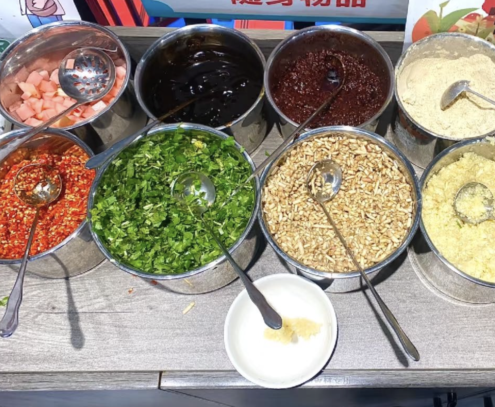

Step 3: Preparing the Sauce
Prepare chopped green onions, minced garlic, and chopped Thai chilies. Then, crush them and drizzle with hot oil. Add white sugar, salt, white sesame seeds, crushed peanuts, sesame oil, chili oil, oyster sauce, and cilantro.